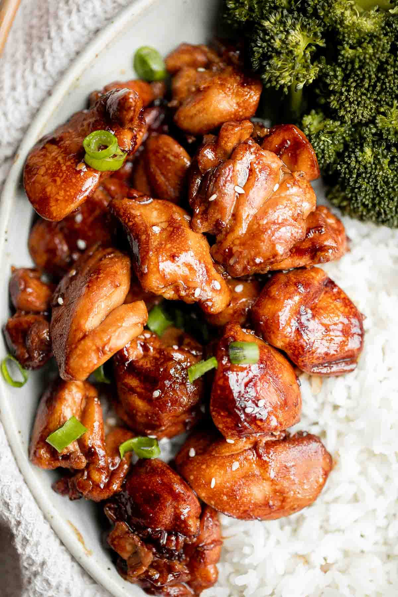

Home
Teriyaki Chicken Recipe

Ingredients
- 2 chicken breasts (or thighs)
- Salt & pepper
- 1 tbsp oil
Sauce:
- 1/4 cup soy sauce
- 2 tbsp honey or brown sugar
- 1 tbsp rice vinegar (or any vinegar)
- 2 cloves garlic minced
- Small piece ginger (optional)
- 1/2 cup water
- 1 tsp cornstarch
Steps
- Cook the chicken
- Season with salt & pepper
- Cook in a pan (medium heat) ~5-7 min per side
- Remove and slice
- Make the sauce
- In same pan: add garlic + ginger (30 sec)
- Add soy sauce, honey, vinegar, water
- Let it simmer
- Thicken it
- Mix cornstarch with a little water
- Pour it in until sauce turns glossy and thick
- Combine
- Add chicken back in
- Toss until fully coated
- Enjoy!